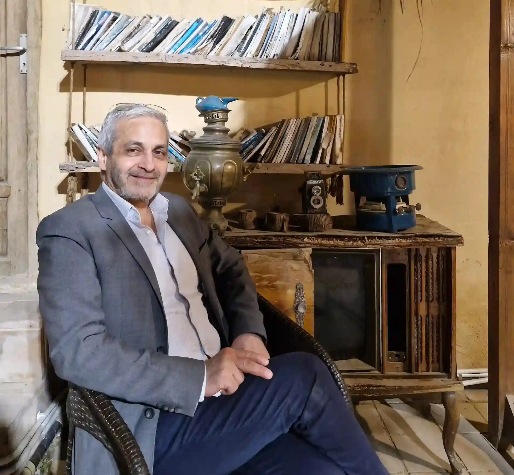

MehdiShahmansouri originario della provincia di Isfahan (Iran) appartiene ad una famiglia di commercianti all’ingrosso da diverse generazioni e vive e lavora a Verona dove dal 1991 importatore diretto si propone anche al dettaglio con una sede esclusiva e prestigiosa all’interno della città antica nelle vicinanze del Duomo.
Shahmansouri non è il classico negozio di tappeti, ma si distingue per originalità e stile. A Verona propone molteplici aspetti dell’arte persiana: tappeti fini e antichi, moderni e di vecchia lavorazione. Pezzi unici per qualità e originalità si accompagnano a manufatti tribali, Kilim, Sacche, Bisacce, Korjin, Jajim, Javal, Cuscini.
In esclusiva propone l’artigianato persiano: come vasi cesellati, vetro soffiato, ceramiche, stoffe stampate a mano, miniature, intarsio, cornici e oggettistica. Tutti oggetti autentici e raffinati rigorosamente fatti a mano.
La serietà e competenza dimostrata da questa pluriennale attività, con sede stabile a Verona, dà garanzie di un solido rapporto che non si conclude con l’acquisto, ma sarà la base di una relazione futura in quanto il tappeto esige lavaggio, manutenzione e custodia, o anche per un semplice consiglio.
La politica di Shahmansouri sta nell’acquisire la fiducia del cliente offrendo disponibilità e servizi, tra cui l’ambientazione a domicilio e accurati lavaggi e restauri per tappeti a Verona e in provincia.
È da sottolineare l’iniziativa “Lista Nozze” organizzata per le giovani coppie che apprezzano il tappeto come un dono esclusivo.